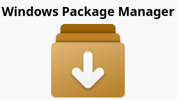
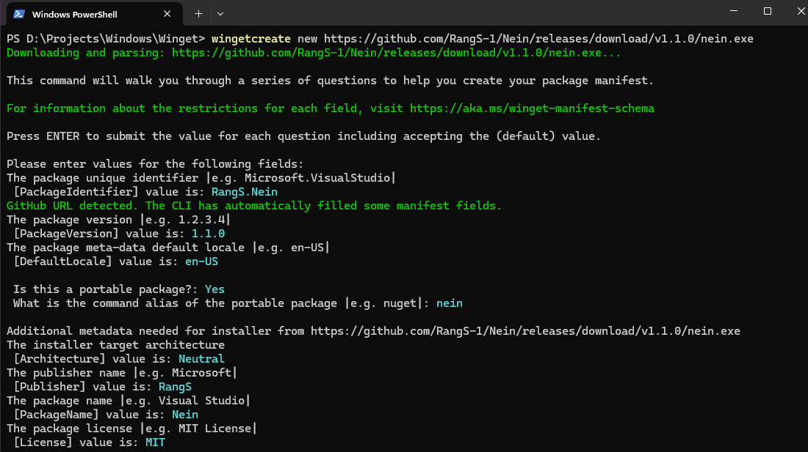
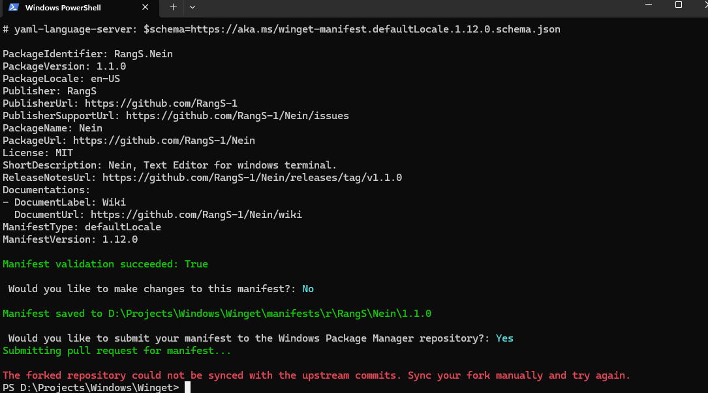
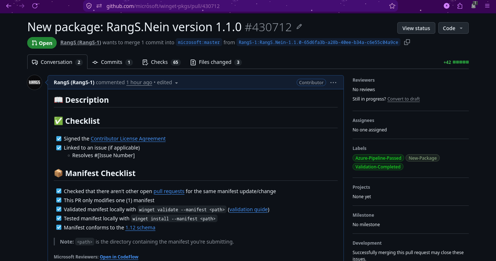
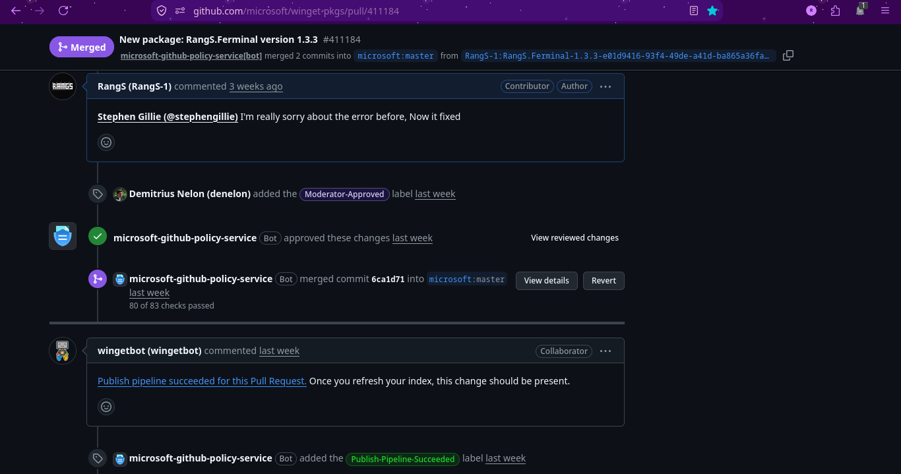

Apa itu Winget?
Winget adalah package manager resmi untuk Windows 10 dan Windows 11.
"Think of import/export as a grocery list and configure as a complete recipe. The grocery list tells you what to buy, but the recipe tells you what to buy and how to put it all together."
— Microsoft Docs
Pada artikel ini, kita akan bahas tentang Winget, terutama pada bagaimana Winget digunakan untuk mengelola package di Windows melalui terminal dan cara membuat package sendiri.
Winget

Jadi apa itu Winget? Winget adalah package manager resmi untuk Windows 10 dan Windows 11. Winget memungkinkan pengguna untuk menginstal, memperbarui, dan menghapus package secara mudah melalui terminal.
Jujur saja aku tidak pernah tahu tentang Winget, aku baru tahu ketika bertanya pada AI tentang apakah ada package manager untuk Windows, ternyata ada dan itu adalah Winget. Pada Windows 10 dan 11 ke atas, biasanya Winget sudah include dengan windows, jadi kau tidak perlu menginstallnya secara manual.
Baca Juga: Arch User Repository: Pengalaman ekosistem AUR di Arch Linux
Penggunaan Winget
Kita sudah masuk pada bagian penggunaan Winget, berikut adalah cheatsheet dalam penggunaan Winget:
winget install <package_name> menginstall package
winget update <package_name> Memperbarui package
winget uninstall <package_name> Menghapus package
winget --info Menampilkan informasi sistem
winget --version Menampilkan versi WingetCukup mudah bukan? Winget ini sangat mirip dengan package manager di Linux seperti apt, pacman dan dnf. Meski mirip, tetap tidak bisa dibandingkan karena Winget ini masih baru dan masih banyak kekurangan, terutama pada performa dan jumlah package yang tersedia. Karena repository Winget ini masih sedikit, itulah yang menyebabkan kurangnya pemakaian Winget sehari-hari.
Membuat Package di Winget
Sekarang kita masuk pada bagian yang cukup menarik, yaitu membuat package di Winget. Aku akan menjelaskan bagaimana cara membuat package di Winget sesuai pengalamanku. Pertama-tama adalah menginstall wingetcreate, wingetcreate ini semacam tool untuk membuat package di Winget. Untuk menginstallnya, kau bisa menggunakan perintah berikut:
winget install wingetcreateSetelah itu, kita bisa membuat package dengan perintah berikut:
wingetcreate new <url-installer-packagemu>
Nanti tinggal ikuti saja perintah yang diberikan oleh wingetcreate. Akan ada beberapa pertanyaan yang perlu dijawab, seperti nama package, versi, deskripsi, dan lain-lain. Setelah selesai, wingetcreate akan membuat file manifest yang berisi informasi package yang kita buat.
Setelah selesai membuat package, kita bisa mengirimkan package tersebut ke Winget dengan perintah berikut:
wingetcreate submit <path-to-manifest-file>Tetapi, jika validasi manifest berhasil, biasanya akan ada pertanyaan untuk mengirimkan package ke Winget.

Jika muncul pertanyaan untuk membuat pull request, kau bisa mengetik "y" dan enter, maka ia akan membuat pull request ke Winget dengan cara fork repository winget-pkgs ke akun githubmu. Nanti kau akan diminta untuk login ke github dan diberi link pull request jika validasi berhasil. Oh ya, jika kau sudah pernah mengirimkan package ke Winget, kau harus sync fork repository winget-pkgs terlebih dahulu, karena jika tidak maka kau tidak akan bisa membuat pull request dengan wingetcreate.
Review dari Microsoft Team.

Bisa kau lihat dari gambar di atas, gambar di atas adalah tampilan halaman pull request yang kita buat dengan wingetcreate. Pada pull request tersebut juga terdapat beberapa checklist yang harus dilalui sebelum package kita diterima oleh Winget. seperti:
winget validate --manifest <path-to-manifest-file>
winget install --manifest <path-to-manifest-file>Setelah melakukan validasi dan installasi melalui manifest, kita perlu menceklis pada pull request bahwa validasi dan installasi berhasil. Jika semua itu selesai, kita hanya perlu menunggu review dari wingetvalidator-prod dan maintainer asli winget.
Dari pengalamanku, biasanya review dari wingetvalidator-prod akan cepat, tetapi review dari maintainer asli winget bisa memakan waktu hingga beberapa minggu, kalau tidak salah sekitar 2 minggu. Setelah 2 minggu menunggu review dari maintainer asli winget, aku mendapatkan response melalui komentar pull request bahwa ada perbaikan yang perlu dilakukan.

Maintainer asli winget bernama Stephen Gillie, dia yang memberikan komentar perbaikan yang harus kulakukan pada package yang kubuat. Sementara itu, Demitrius Nelon mengecek kembali package yang kubuat, setelah sesuai dan tidak ada error, ia memberikan moderator-approved dan wingetbot otomatis merge pull requestku ke repository winget-pkgs.
Oh ya, aku hampir lupa untuk menceritakan bagaimana cara memperbarui pull request yang sudah dibuat. Sebenarnya caranya cukup simple, pada halaman pull request, kau bisa klik bagian "Files changed" dan klik titik tiga di pojok kanan atas, nanti akan ada pilihan untuk "Edit File". Setelah selesai mengedit file, cukup commit dan tunggu proses review sekitar 2 minggu lagi.
Testing dengan PowerShell/Command Prompt
Setelah package kita diterima oleh Winget, kita bisa menginstall package tersebut melalui terminal. Bisa menggunakan PowerShell atau Command Prompt. Berikut adalah perintah untuk menginstall package yang sudah diterima oleh Winget:
winget install <package-kamu>Jika proses install berhasil, artinya selamat! package yang kau buat sudah bisa digunakan oleh semua pengguna Windows 10 dan 11+ dengan perintah winget tersebut. Kamu bisa mengecek package yang kubuat di winget-pkgs repository.
Baca Juga: Bash: Mencoba scripting terminal dengan Bash
Kesimpulan
Membuat package di Winget merupakan pengalaman yang menarik, karena kita belajar bagaimana ekosistem package manager bekerja di Windows.
Meskipun Winget masih dibilang baru, tetapi sudah cukup baik untuk digunakan sehari-hari. Aku berharap Winget bisa menjadi package manager yang lebih baik lagi di masa depan.
Jika kau tertarik lebih lanjut dengan ekosistem open source di Windows, aku sarankan untuk menonton video berikut:
Link ke Video.